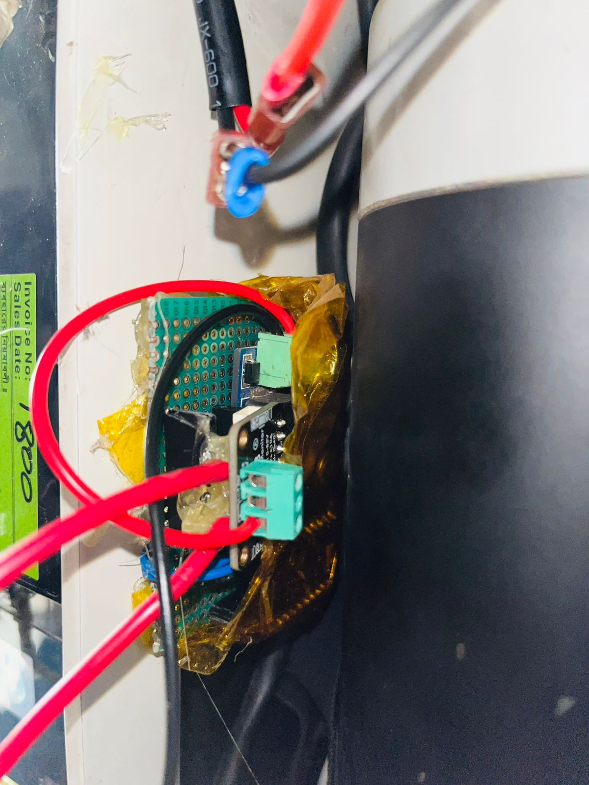
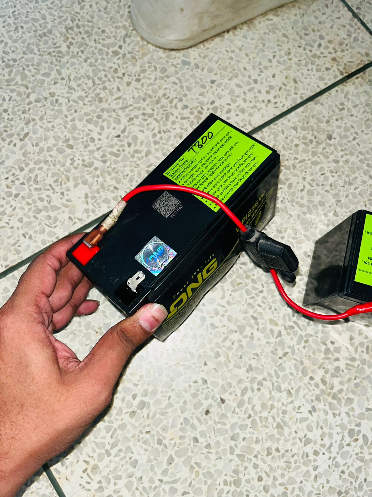
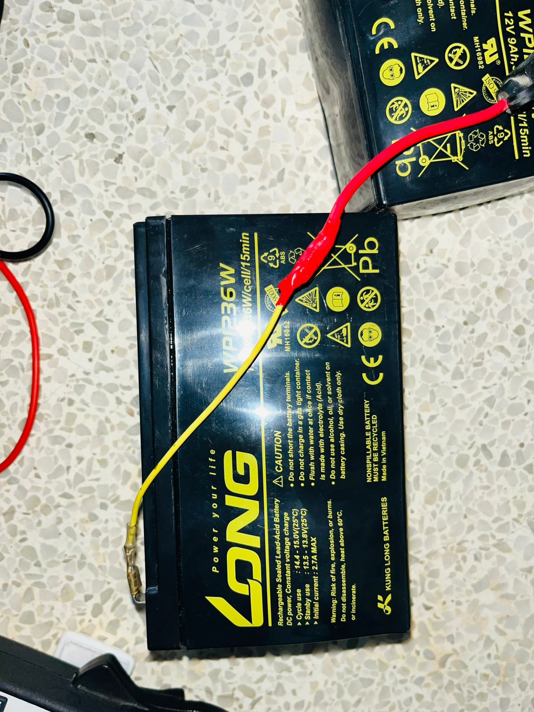
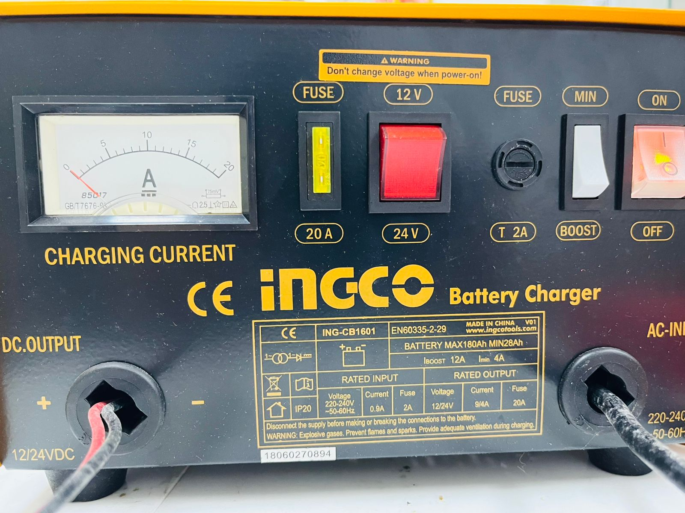
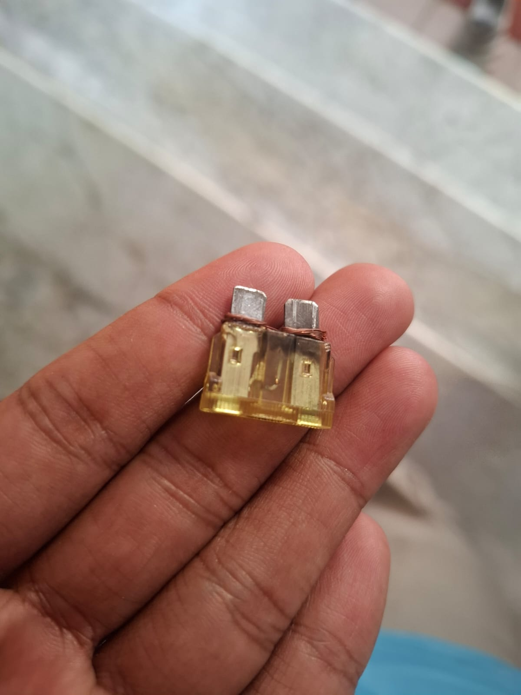
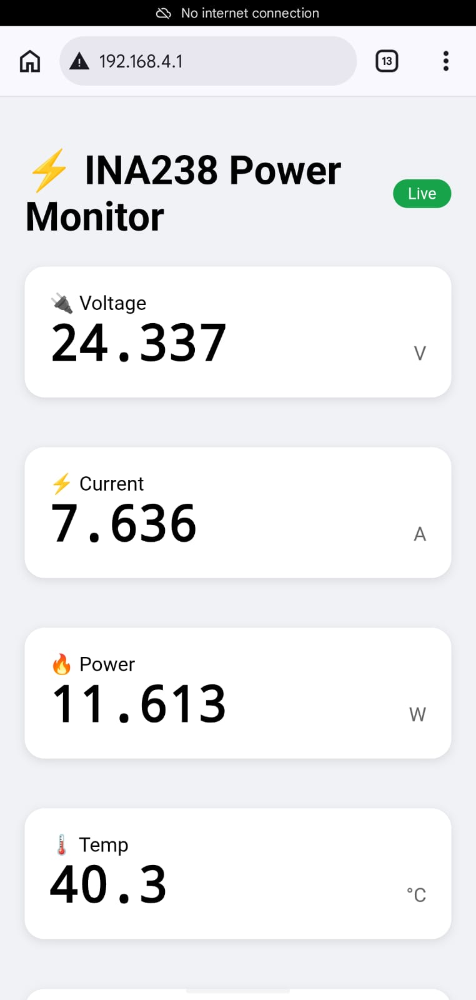

LIVE MONITORING
REHABILITATION
MIT LICENSE
Energy Monitoring of Chair Lift
Hardware rehabilitation, Pico-based chair control, and INA238 + ESP32-C6 real-time power monitoring with web dashboard and CSV logging.

ESP32-C6 INA238 MicroPython Pico I2C
Documentation
Stair Lift Rehabilitation and Energy Monitoring
Full project documentation (formerly public repo README), integrated on this page.
Problem Solution Architecture
Circuit Hardware Software
Installation Gallery Team
The stair lift failed due to an incompatible charger (burned battery, motor driver, blown fuses). We replaced components, added a safety-focused Pico controller, and deployed non-invasive energy monitoring on the 24V bus.
Problem
Critical Hardware Failures
Battery burned out - wrong charger caused thermal runaway.Motor driver destroyed - overvoltage disabled the motor.Wrong charger (root cause) - voltage mismatch cascaded through the system.Fuse blown - repeated overcurrent stress.
Solution
Rehabilitation Phases
Phase 1 - Hardware New battery and motor driver 24V 2A approved charger 10A fuse upgrade Completed
Phase 2 - Control Pico UP/DOWN motor control Limit switches and E-stop NeoPixel and buzzer feedback Completed
Phase 3 - Monitoring INA238 V/I/P measurement Web dashboard and CSV MQTT optional Completed
Architecture
System Design
Raspberry Pi Pico PWM motor, brake/charge relays, limits, NeoPixel, buzzer, 1s start delay.
ESP32-C6 WiFi, INA238 reader, AP PowerMonitor or station mode, WebSocket dashboard.
INA238 I2C 0x40, 0.015 ohm shunt, 0-85V, +/-10A, temperature.
24V Bus Battery, approved charger, buck 24V to 5V for ESP32.
Pico: inputs (calls, edges, stops) -> outputs (PWM, brake, charge, LED, buzzer)
State: HEALTHY | ZONED (charging) | MOVING_UP | MOVING_DOWN
Data flow
Monitoring Pipeline
24V Bus
->
INA238
->
ESP32-C6
->
Dashboard
->
CSV Log
Wiring
Energy Monitoring Circuit
CHAIR LIFT ENERGY MONITORING - WIRING DIAGRAM
24V BATTERY
Lead-Acid / Li-ion
Chair lift supply
INA238
I2C 0x40 | 0-85V | 10A
Shunt 0.015 ohm
CHAIR LIFT
Motor / Driver
24V DC load
Common GND
BUCK 24-5V
3A powers MCU
ESP32-C6
MicroPython WiFi
GPIO19 SDA
GPIO20 SCL
3.3V / GND
5V from Buck
AP: PowerMonitor
I2C bus
Web dashboard | WebSocket | CSV | MQTT | 192.168.4.1
High-side shunt on 24V chair lift bus
From To Signal
24V + INA238 VIN+ via shunt INA238 VIN- Load motor path INA238 ESP32 SDA 19, SCL 20 Buck ESP32 5V
Hardware
Bill of Materials
Part Spec
Pico Chair control ESP32-C6 + INA238 Energy monitor 24V battery / 2A charger Power Buck 24-5V MCU supply
Firmware
Software Features
Real-time V, I, P, temp, kWh, cost
2-hour charts, WebSocket, CSV export
WiFi AP PowerMonitor, http://192.168.4.1
Pico: limits, brake, charge relay, LED states
PWM_UP=26 PWM_DOWN=27 | INA238 SDA=19 SCL=20 | AP: PowerMonitor
Setup
Installation
Pico Flash MicroPython; copy Chair_Lift_Main/main.py; test I/O.ESP32-C6 Flash firmware; copy Energy_Monitoring/main.py.Connect Join AP PowerMonitor (password ina238pro); open http://192.168.4.1
Gallery
Project Images

Before Burned battery from wrong charger.
After New battery installed.
Correct charger 24V approved unit.
Fuse 10A protection.Monitor hardware INA238 + ESP32-C6.
Live dashboard Power and voltage graphs.
Team
Contributors
Hardware
Sama E Shan Shoummo
Control
Sultan Mahmud Saad
Energy monitoring
Nafis Mohammad Redwan
Integration
Julfiker Ibn Haider
Outcomes
Key Achievements
Resolved root-cause charger failure and restored safe operation
State-machine control with redundant safety on Pico
Live energy analytics with web UI and CSV logging
Safety: High voltage and moving parts. Follow electrical codes; inspect regularly.